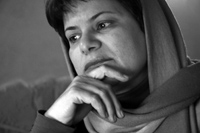

پذيرش > سایت نوشته ها > سیاست فرار به جلوی امنیتی ها؛ رساتر از اعتراض جنبش زنان علیه لایحه خانواده؟!؛
 لایحه ضد خانواده لایحه ضد خانواده

 سیاست فرار به جلوی امنیتی ها؛ رساتر از اعتراض جنبش زنان علیه لایحه خانواده؟!؛ سیاست فرار به جلوی امنیتی ها؛ رساتر از اعتراض جنبش زنان علیه لایحه خانواده؟!؛
1 مهر 1387 - خبرنامه امیرکبیر / محبوبه عباسقلی زاده - نسخه قابل چاپ
در حالی که ائتلاف بی نظیر گروه های درگیر در جنبش زنان به گشودن عرصه های عمومی بدیل در اعتراض به مواد لایحه خانواده روی آورده ، صدور احکام فعالینی که پرونده های گشوده در دادگاه انقلاب داشتند در چند هفته اخیر روند سختگیرانه تری یافته است. کمتر از چند روز بعد از واقعه ده شهریور که طی آن چهره های شناخته شده جنبش زنان به همراه زنان شهروند سالن های ملاقات عمومی نمانیده های مجلس را به تصرف در آورده بودند، ژیلا بنی یعقوب به دادگاه انقلاب احضار می شود، اتهام پروین اردلان، مریم حسین خواه، ناهید کشاورز و جلوه جواهری فعالیت در سایت های زنستان و تغییر برای برابری اعلام می شود و در حکم صادره از سوی شعبه ۱۳ دادگاه انقلاب اسلامی این فعالان جنبش زنان به استناد ماده ۵۰۰ قانون مجازات اسلامی به شش ماه حبس تعزیری محکوم می شوند و اندک مدتی بعد اعلام می شود احکام حبس و شلاق تعلیقی نسرین افضلی، مینو مرتاضی لنگرودی، فخری شادفر و معصومه ضیا قطعی شده است.
آیا رابطه معنی داری بین تغییر استراتژی های اعتراضی نیروهای ائتلافی جنبش زنان با شدت گرفتن احکام فعالان وجود دارد؟ استراتژی ویژه جنبش زنان در مورد اعتراض به لایحه خانواده؛ هدایت اعتراض عمومی زنان بر علیه مواد لایحه به مجراهای مدنی مانند روزنامه ها، ارسال بروشور و کارت های اعتراضی به نمایندگان مجلس و گفتگوی رودرو با آنان در مورد مشکلات مضاعفی بوده است که تصویب مواد این لایحه برای زنان و خانواده ها ایجاد خواهد کرد. بدیهی است که حضور بدون مانع زنان فعال در مجلس و گفتگوی بی سابقه چهره هایی مانند شیرین عبادی با نمایندگان مجلس موجب خشم جریاناتی شده است که از چند هفته پیش به میزان وحجم تبلیغ اتهامات واهی علیه فعالان زن و به ویژه شیرین عبادی افزوده بودند و امید آن داشتند که از این طریق مشروعیت جریان ها و چهره های شناخنه شده جنبش را کاهش دهند، اما آیا سخت گیری در مورد احکام پرونده های فعالان جنبش بخشی دیگری از برنامه های عاملان همین پروژه است؟
چرا فاطمه آلیا نماینده مجلس ازحضور زنان فعال در مجلس خشنود نشد؟ مگر تحصن همین زنان در آن طرف میله های آهنی مجلس به تعبیر یاران او منافع ملی ملت را به خطر نمی انداخت و مگرکشاندن زنان معترض به پای میز مذاکره نمی توانست نوعی گشایش فضاهای مدنی صلح آمیزمحسوب شود؟ پس چرا با الفاظی رکیک آنهم در صحن علنی مجلس؛ آنان را مشتی لائیک لجن پراکن و جایزه بگیر خارجی خواند و به دنبال آن فرحناز قند فروش در مصاحبه ای با تکرار اتهامات کلیشه ای همیشگی فعالان جنبش زنان را ایادی استکبار و طرفدار چند شوهری دانست.
عکس العمل تند زنانی که نمایندگی نوبنیادگرایان را در پست های حکومتی به عهده دارند می تواند به این معنی باشد که تصویر کلیشه ای که پایگاه های تبلیغاتی آنان از فعالان جنبش زنان به عنوان عاملان خارجی ارائه می داده اند؛ شکسته شده و از مشروعیت یافتن این فعالان و تاثیر فعال آنان در روند تغییرات قوانین و گشوده شدن حداقلی فضاهای مدنی به هراس آمده اند.
فاطمه آلیا در محافل غیر رسمی حتی تعطیل شدن موقتی برنامه تلوزیونی “اردیبهشت” که از جانب گروه های اصول گرای مخالف لایحه خانواده اجرا می شود را به رایزنی شخصی خودش با اصحاب سیما نسبت می دهد و درتصاویری که از مشاجره او در مجلس در روز ۱۰ شهریور با فاطمه کولایی منتشر شده می توان به وضوح در ورای نگاه تحقیر آمیزش عدم تحمل و خشم بی انتهای او را از مخالفانش خواند. مبنای این خشم که بیننده را به یاد زهرا خانم های دوره انقلاب می اندازد چیست؟ در شرایطی که فاصله های ایدئولوژیک بین گروه ها و طیف های مختلف فعال در حوزه زنان؛ در سایه مسایل واقعی زنان کشور؛ از بین رفته و به نوعی همگرایی و و وحدت نظر پیرامون مخالفت با لایحه خانواده تبدیل شده است، چرا باید مقاومتی این چنین کور و اقتدارگرایانه از جانب جریاناتی ایجاد شود که هیچ نامی جز بنیادگرایان نوخاسته بر آنان زیبنده نیست؟ آیا این بنیادگرایی نوین همان چیزی نیست که محمود احمدی نژاد آن را تسلط گفتمان انقلاب در سه ساله اخیرمی خواند؛ تجدید گفتمان سرکوب های کور اوایل انقلاب در قالبی مدرن و نهادینه شده که افتخار نمایندگی آن در بخش زنان به زهرا خانم های متجددی چون آلیا و طبیب زاده و قندفروش واگذار شده است!
با این حال تخمین این که فشار این جریانات تا چه حد در به حاشیه راندن فعالان جنبش زنان موثر است، موضوعی است که تنها با اندازه گیری میزان تاثیر جنبش زنان بر تغییر مفاد و مواد لایحه خانواده و حداقل حذف دو ماده ۲۳ و ۲۵ و بند ۴ ماده ۵۳ به دست می آید و تحلیل های مختلف منتشر شده شاهدی بر آن است.
آیا خشمی که تا این سان گریبانگیر احکام قهرآمیز زنان فعال شده است به واقع از ناحیه بنیادگرایان تمامیت خواه است یا اقدام پیشگیرایانه ای است از جانب نیروهای امنیتی و قضایی که می خواهند “سیل” پراکنده جنبش زنان را به “مسیل” دلخواه و قابل کنترل خود هدایت کنند: باز کردن فضاهای تنگ حداقلی در قالب فضاهای مدنی و بستن خیابان ها و دروازه ها از طریق مجازات سخت وتحقیر آمیز( شلاق) کسانی که روزی از عرض خیابانی گذشته اند و فریادی زده اند و یا در حمایت از آنها در سایت های خود روشنگری کرده اند.
راهبرد نیروهای امنیتی و قضایی، دست کم در حوزه زنان استفاده ازبازی چماق وهویج بوده است. آنها در بشقاب های “تعامل” هویج هایی چیده اند که اگر در تعارف های مدنی رد شوند چاره ای جز از تحمل چماق نخواهد بود: دست راست، چماق نوبنیادگراها که بر تن نحیف جنبشی ها می خورد و دست چپ، لولو جلوه دادن جنبشی هایی که قادرند به اندک حرکتی باعث خشم حریفان خود شوند.
اگر این فرضیه درست باشد باید گفت که مصلحت گرایان در این میانه از اتخاد استراتژی “فضای مدنی بدیل” به جای “نافرمانی مدنی” که در جریان اعتراض به لایحه مورد استفاده ائتلاف بزرگ جنبش زنان قرار گرفت، بیشترین سود را خواهند برد چرا که مسئله آنان اداره کشور و حفظ نظام با هر روش و کیفیت است. اما اگر آنان یکی از منتفعین اصلی این واقعه بوده اند به چه علت فشارها بر فعالان جنبش افزایش یافته است؟
درجبهه مصلحت گرایان دو کنش متفاوت نسبت به جنبش زنان وجود داشته است:
۱- فشار جنبش زنان موجب شد تا لابی مصلحت گرایان درگیر در بدنه قانوگذاری و به ویژه منتقدان داخل حکومت نظیر قوه قضاییه و برخی از نمایندگان مجلس کارگر افتاده و مواد جنجال برانگیز لایحه حذف شود. با این همه آنان پیوسته در سخنان خود از جنبش زنان به عنوان نوعی “لولو”ی خیالی با واژه هایی نظیر هیاهو آفرینان سیاسی نام می برند تا رقبای متوهم تر از خود را به درخواستهای حداقلی راضی کنند. سابقه مسئولین کهنه کار جمهوری اسلامی نشان می دهد که آنها هیچگاه دررابطه با سیاست های جنسیتی، حاضر به اعتراف اشتباهات خود نبوده اند. بنابراین روش قدیمی آنان ربودن نقد های جنسیتی از نیروهای مخالف، لولوسازی از همان نیروهای مخالف و سپس درونی کردن و تقلیل دادن همان نقد از طریق ادبیات و سیاست های درون حکومتی است.
۲- اگر تشدید مجازات های غیر عادلانه ای را که بشدت جانبدارانه، سیاسی و اصولا غیر قانونی است از سوی بخشی از نیروهای امنیتی و قضایی که خود را مصلحت گرا می خوانند بدانیم در این صورت یک پیام روشن خواهد داشت و آن احساس ناامنی امنیتی ها از بازگشت زنان به خیابانهاست وتنها تضمین کنترل این ناامنی، بالا نگه داشتن “شمشیر داموکلس” بر سر جریاناتی اجتماعی است که بالقوه توان بسیج زنان برای اعتراض علیه وضعیت تبعیض آمیز موجود را دارند.
در ورای این پیام روشن یک واقعیت تلخ وجود دارد که گاهی با پرسش هایی دلسوزانه از جانب فعالین جنبش پیش روی حریفان قرار گرفته است: “چرا نظام تا این حد از تحصن و اعتراض خیابانی و رسانه ای وحشت دارد؟ و مگر در اکثر کشورها نیستند جریانات معترضی که در یک روز و ساعت مشخص بیرون می آیند و حرفشان را می زنند و نیروهای انتظامی هم آنها را محافظت می کنند و و مسئولین هم شب هنگام از طریق اخبار رسانه ها جواب این معترضین را می دهند و آب از آب ارکان حکومت به هم نمی خورد؟! پس چرا نیروهای امنیتی و انتظامی کهنه کارتا این حد از علنی شدن مخالفت درباره سیاست های نظام وحشت دارند؟!”
ریشه این ناامنی امنیتی ها که با نگاهی روانشناسانه نشان دهنده تسلط موقعیت “والد” سختگیر و خود رای در ضمیر جمعی آنان است و موجب تقویت روحیه ” کودک” پرخاشگر و قانون گریز در جامعه شده و مدیریت آن را تا بدین حد دشوار می سازد چیست؟ “والد”هایی که به ظاهر و در ادعا از نظر علمی ارزش آزادی و دمکراسی را می دانند اما هنوز آن را وارد لایه های عاطفی ذهنی خود نکرده اند و از نظر هیجانی درگیر همان هویت تاریخی هستند که در دوره انقلاب برای خود بازیابی کرده بودند. هویتی که توهم توطئه و شیطان بزرگ یکی از عناصر اصلی تشکیل دهنده آن بوده و کوچکترین مخالفتی می توانست به معنی تصرف ناکجا آباد ذهنی آنها توسط دشمن خیالی باشد. به همین دلیل است که تشدید این مجازات ها می شود نوعی واکنش پارادوکسیکال که حامل نوعی تضاد درونی بین “خود دمکرات” و “خود تمامیت خواه” است: از یک طرف عبور زنان فعال از نرده های آهنی مجلس و شنیده شدن صدای قدم های مصمم آنان را در راهروهای دوربین دار تحمل می کند و از طرف دیگر گلوی محکومین باریکتر از مو را، با تشدید محکومیت آنان فشار می دهد.
شاید آنها هیچگاه نخواسته اند با این پرسش واقع بینانه برخورد کنند که حتی اگر ده هزار زن معترض که نهایت درخواستشان عدم دخالت حکومت در زندگی شخصی آنان است و دیگر امید بهبود وضعیت خود را از ناحیه حکومت از دست داده اند؛ در مقابل مجلس تجمع و تحصن کنند؛ چه اتفاقی برای نیروگاه های حفاظت شده هسته ای و پایگاه های بی شمار نظامی یا ساختمان های مستحکم حکومتی می افتد که این چنین پیشاپیش به قلع و قمع فعالان جنبش از طریق احکام تعلیقی و تعزیری می پردازند؟!
در کجای تاریخ و در کدام کشور، مخالفت و اعتراض زنان موجب سستی بنیان حکومت ها شده است که فرهنگ عمومی گرایش های مختلف درون حکومت تا بدینسان با رویت پذیر شدن اعتراض های مدنی دشمنی می ورزند؟!
سئوال دیگر این است که جنبش زنان در اتخاد استراتژی “فضای مدنی بدیل” به جای “نافرمانی مدنی” تا چه حد به موضوعات امنیتی و حفاظت از فعالان در برابر فشارهای موجود توجه داشته و یا اصالت داده است؟ آیا تغییر ناگهانی “تحصن” در مقابل مجلس به “گفتگو”ی حضوری با نمایندگان؛ به معنی انفعال در برابر تهدیدات احتمالی حریفان است؟
از یک نگاه درونی و نیز با مطالعه کنش های جنبش زنان -لااقل در قضیه اعتراض علیه لایحه خانواده- می توان به جرات اعتراف کرد که هیچگاه مسئله جنبش زنان؛ قدرت نمایی سیاسی و یا به رخ کشیدن توان فکری و عملی خود در برابر حریفان نبوده است. بنابراین برغم همه معادلات سیاسی در فضای درون حاکمیت آنچه برای زنان فعال درائتلاف مهم بوده است جلوگیری از پیشبرد لایحه ضد زن و ضد خانواده با هر روش ممکن است.
چیزی که متن و روح اصلی استراتژی های ائتلاف را تشکیل می دهد نه حساب و کتاب های سیاسی برای افشای چهره ضد زن حاکمیت و خط و نشان کشاندن در برابر بنیادگراها و نه درگیر شدن در بازی چماق و هویج نیروهای امنیتی به ظاهر مصلحتگرا بوده؛ بلکه جلوگیری از قانونی شدن لایحه با شکل و محتوی فعلی با هر روش ممکن است. بنابراین آنچه که در این استراتزی مهم می شود میزان کارایی روش های ممکن برای جلوگیری از قانونی شدن لایحه است؛ اگر روش تحصن کارآ باشد بدون هیچ ملاحظه ای انجام می شود و اگر روش مذاکره و گفتگو کارگر افتد، پس شدنی است.
به جرات می توان گفت که زنان فعال یعنی همان هایی که روزگاری پرونده ای داشتند- و حتی در همان ایام به ناجوانمردی روزهای متمادی در انفرادی به سربردند- و ناگاه در این روزها به ناعادلانه ترین شکل پرونده هایشان فعال شده است، اگربه این نتیجه برسند که لازم است برای دفاع از حق زنان در مقابل مجلس صف آرایی کنند، بی گمان در صف اول قرار گرفته و از بین نرفتن حق خواهران و دختران و زنان هم وطن خود را تا بدان حد ارزشمند می دانند که حتی حاضر شوند چند صباحی در بند باشند و یا مانند آزادیخواهان دوران برده داری شلاق بخورند.
فعالان پرونده دار پیش ازاین نیز نشان داده اند که جریانی مستقل از سایر جنبش های سیاسی بوده و به آرمان زنانه و فمنیستی خود وفادارند و به خاطرآن بسیاری از حقوق شهروندی خود را که به نام قانون از آنان سلب شد، برتافته اند و به راه خود ادامه داده اند. بنابراین سیاست هایی نظیر شدت بخشیدن به احکام دادگاه ها و تبدیل تبرئه به تعلیقی و تبدیل آن به تعزیری، بیشتر از آنکه از اتفاقات محتمل دربرابر اراده زنان جلوگیری کند، چهره ای مستبد و دیکتاتور از حاکمیت نشان خواهد داد که حتی تحمل تغییرات را از مجرایی جز آنکه خود اراده کند ندارد.
و سر آخر آنکه پیام برآمده از تشدید احکام قضایی علیه زنان فعال پرونده دار، بسیار رساتر و شفاف تر و گویاتر ازهمان فریادی است که بنا بوده به حق خواهی از گلوی زنان در تحصن احتمالی مقابل مجلس خارج شود. فریادی که “سیاست فرار به جلو” ی امنیتی ها، آن را به واقعیت تبدیل کرده است و شاهدی بر مدعای تبعیض و بی عدالتی علیه زنان در این سرزمین است.
خبرنامه امیرکبیر
ارسال به
بالاترین
،
توییتر
،
فریندفید
،
فیسبوک
در همين بخش :
 یک خبر تلخ؟ یک قانونشکنی؟ یک تصمیم بخشنامهای جدید؟ یک خبر تلخ؟ یک قانونشکنی؟ یک تصمیم بخشنامهای جدید؟
چرا بایست به سکسوالیته پرداخت؟ / نفیسه آزاد
آزارجنسی خانگی؛ «قربانی» نه، «نجات یافته»
زنان، بزرگترین بازندگان بهار عرب
سانسور از دیدگاه جنسیتی/الهه امانی
ديگر بخش ها :
طرح یک میلیون امضا
|
مقالات
|
سایت نوشته ها
|
اخبار
|
گزارش كمپين
|
گفت و گو
|
علیه سکوت
|
كوچه به كوچه
|
نامه های شما
|
گزارش ویژه
|
گفتگو با اعضا
|
ویژه سالگرد کمپین
|
تصویر برابری
|
دل آرام علی
|
تریبون
|
مقالات
|
تاریخ شفاهی
|
خارج از چارچوب
|
کتابخانه
|
درباره کمپین
|
کمپین در شهرها
|
کمپین در بند
|
صدای تغییر
|
ویژه 22 خرداد
|
لایحه حمایت از خانواده
|
گالری
|
عشا مومنی
|
امیر یعقوبعلی
|
خدیجه مقدم
|
راحله عسگری زاده و نسیم خسروی
|
پروین اردلان،جلوه جواهری، مریم حسین خواه، ناهید کشاورز
|
زینب پیغمبرزاده
|
سعیده امین، سارا ایمانیان، محبوبه حسین زاده، ناهید کشاورز و همایون نامی
|
احترام شادفر
|
نسیم سرابندی زاده،فاطمه دهدشتی
|
وبلاگ مهمان
|
پرونده خرم آباد
|
دستگیری ها
|
مریم مالک
|
پرستو اللهیاری
|
مهرنوش اعتمادی
|
سمیه رشیدی
|
Other Languages
|
همراهان
|
«فراخوان کمپین ده روز با بهاره هدایت»
| English
|